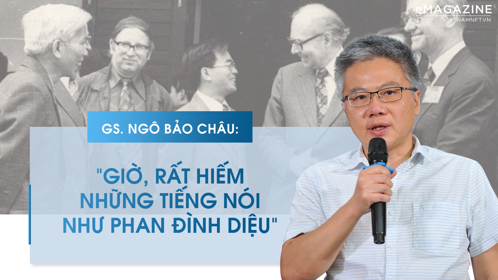

Nguồn: Báo VietNamNet

LTS: 45 năm trước, vào những ngày đầu năm 1977, Viện Khoa học Tính Toán \& Điều Khiển (nay là Viện Công nghệ Thông tin Việt Nam) chính thức đi vào hoạt động, khởi đầu cho sự phát triển ngành Tin học ở nước ta, khi đất nước còn đang gặp khó khăn, cấm vận. Được thuyết phục về tầm quan trọng của khoa học máy tính và công nghệ thông tin, vượt trên những lo ngại về sự ảnh hưởng của dòng tin không chính thống, các nhà lãnh đạo đất nước đã đồng tình và phê duyệt những chính sách mạnh dạn và tiến bộ như mở cửa Internet từ 25 năm trước (1997-2022) - rất sớm so với các nước cùng hệ tư tưởng. Trong đó, GS Phan Đình Diệu được coi là người mở đường, "người anh cả" của ngành Công nghệ thông tin.Nhân cột mốc 45 năm thành lập Viện Khoa học tính toán và Điều khiển (1977 - 2022) và 25 năm Internet chính thức có mặt tại Việt Nam (1997 - 2022), VietNamNet có cuộc trò chuyện với GS Ngô Bảo Châu về GS Phan Đình Diệu (1936-2018) - nhà toán học, nhà khoa học máy tính nổi tiếng; Viện trưởng đầu tiên của Viện, đồng thời là Chủ tịch sáng lập Hội Tin học Việt Nam.
Cái tên Phan Đình Diệu đã đi vào ấn tượng của anh từ khi nào?
GS Ngô Bảo Châu: Khi còn nhỏ, tôi may mắn lớn lên trong một gia đình khoa học, tôi có dịp trò chuyện nhiều với bố mẹ và bạn bè của bố mẹ tôi. Trong các cuộc chuyện, mọi người rất hay nhắc đến tên của GS Phan Đình Diệu với sự kính trọng đặc biệt, như một thần tượng khoa học. Lúc đó, tôi không nghĩ về sau mình lại có cơ hội được tiếp xúc. Sau này, tôi có làm bạn với cả 3 người con của GS Phan Đình Diệu nên cũng có dịp hợp tác cùng họ và hiểu về ông hơn.
GS Phan Đình Diệu là nhà khoa học hiếm hoi được mời đến Mỹ trao đổi khoa học và giảng bài tại các trường ĐH, từ trước khi Mỹ xoá bỏ cấm vận với Việt Nam. Trước đó, những kết quả trong luận án Tiến sĩ mà ông bảo vệ xuất sắc tại Nga cũng đã được dịch sang tiếng Anh và nhà xuất bản của Hội Toán học Mỹ in. Anh nhìn nhận thế nào về hành trình của một nhà khoa học Việt trong môi trường học thuật phương Tây, ở vào một bối cảnh bất lợi hơn nhiều so với thời của anh?
Như chị cũng biết, trong thời kỳ chiến tranh và bao cấp, nhiều nhà khoa học Việt Nam được đào tạo ở Liên Xô cũ và các nước Đông Âu. Trong đó có một số tên tuổi rất xuất sắc, như trường hợp của GS Diệu, với công trình luận án Tiến sĩ tại Đại học MGU (Liên Xô) gây tiếng vang lớn trong giới toán học lý thuyết, liên quan đến cơ sở toán học cho tin học. Vào thời kỳ đó, không chỉ với Việt Nam đâu, ngay cả trong quan hệ với Nga hay Liên Xô cũ; các nước phương Tây đều có một bức tường, một bức tường vô hình trong trao đổi thông tin học thuật, sách vở rất là khó khăn. Tôi được biết, có một số người nhận được thư mời dự hội thảo, nhưng chỉ đơn thuần là bưu điện chậm quá, và lỡ mất cơ hội. Trong điều kiện khó khăn như vậy, trong sự bế quan toả cảng về mặt kiến thức và giao lưu như vậy, rất hiếm nhà khoa học Việt Nam nhận được sự công nhận của giới khoa học quốc tế như trường hợp của GS Phan Đình Diệu. Cho đến bây giờ, tôi hiểu, những nghiên cứu của GS Phan Đình Diệu vẫn là những yếu tố nền tảng trong toán logic và cơ sở toán học cho tin học.
Việt Nam là một trong những nước đang phát triển từng có sự cởi mở rất sớm trước cánh cửa internet, trong bối cảnh nhiều nước khác còn nghi ngại về mặt trái của nó. Trong đó, GS Phan Đình Diệu được ghi nhận là một trong những người tiên phong, với mong muốn mạnh mẽ đưa internet vào Việt Nam, tạo ra chiếc máy tính đầu tiên tại Việt Nam. Anh đánh giá sao về tầm nhìn đó?
GS Phan Đình Diệu không chỉ là một nhà khoa học xuất sắc, có những công trình được người trong giới công nhận. Ông còn là một nhà trí thức, một sĩ phu theo đúng nghĩa sĩ phu xứ Nghệ. Ông luôn đau đáu cho công cuộc kiến tạo đất nước. Luôn đau đáu câu hỏi làm sao cho xã hội chúng ta đang sống được văn minh hơn, dân chủ hơn và trong ngành khoa học máy tính mà ông theo đuổi là làm sao phát triển hơn, bắt nhịp được với thế giới...
Ông là Viện trưởng đầu tiên của Viện Khoa học tính toán và Điều khiển (nay là Viện Công nghệ Thông tin Việt Nam - P.V), cũng là người sáng lập và là Chủ tịch đầu tiên của Hội Tin học Việt Nam. Trước khi đại đa số người dân Việt Nam chưa biết máy tính là gì thì ông là một trong những người mang nền tảng máy tính đầu tiên về Việt Nam và có những cuốn sách đầu tiên phổ biến máy tính là gì, về thuật toán, về cơ sở toán học cho tin học...
Ông cũng là một trong những người đầu tiên nhận ra tiềm năng thay đổi xã hội vô cùng lớn của mạng internet và thay đổi xã hội từ nhận thức của người dân và dân trí nói chung. Theo tôi được biết, ông thuộc nhóm những nhà trí thức đã vận động mạnh mẽ để Việt Nam mở cửa và kết nối mạng internet. Rõ ràng đó là một vấn đề rất khó khăn. Đùng một cái, mở cửa cho các luồng thông tin từ phương Tây vào, và bất kỳ ai cũng có thể đọc được, biết được, thì đó rõ ràng là một việc rất khó để thuyết phục được các nhà lãnh đạo.
Không phải đơn giản để có được bức tranh chuyển biến xã hội từ hơn 20 năm nay. Trong rất nhiều yếu tố thì yếu tố mở cửa internet phải nói là bước đột phá rất quan trọng và có ý nghĩa lâu dài, đó là bước tiến không thể đảo ngược được.
Thử hình dung nếu nước ta mở cửa internet muộn hơn nữa thì Việt Nam sẽ đi về đâu, theo anh?
Tôi nghĩ giới trẻ bây giờ và ngay cả những người trung niên, người lớn tuổi như bố mẹ tôi chẳng hạn, họ thực sự đã suy nghĩ khác rất nhiều so với cách đây 20 năm. Đó là nhờ được tiếp cận thông tin. Có nhiều điều trước đó do người ta nói đi nói lại nhiều, người ta cho là đúng, thì nhờ sự tiếp cận thông tin mà đã mở ra nhiều góc nhìn khác, đúng hay sai chưa biết nhưng cũng khiến chúng ta suy nghĩ. Tôi nghĩ đó là một điều hết sức quan trọng, internet đã tước đi cái mặt nạ che kín mắt chúng ta, giúp ta nhìn được nhiều thứ rõ nét hơn.
Ngoài việc gắn kết con người, cập nhật kiến thức thì Internet đồng thời là một kênh phản biện xã hội. Nhưng vào cái thời internet chưa phổ cập, chưa có mạng xã hội và cũng chưa có chất vấn QH tại các kì họp QH như sau này thì tiếng nói của GS Phan Đình Diệu đã sớm cất lên tại các diễn đàn Mặt trận tổ quốc, Quốc hội, khi ông là Uỷ viên Đoàn Chủ tịch Uỷ ban Mặt trận tổ quốc Việt Nam 5 khoá liền và là ĐBQH 2 khoá liền...
Tôi xin chia sẻ, cách đây hơn 5 năm, khi Nhà nước, Chính phủ có chủ trương chỉnh lại một số điểm trong Hiến pháp. Tôi và một nhóm bạn bè đã tham gia vào phong trào chung để cùng theo dõi cuộc sửa đổi Hiến pháp năm 2013. Chúng tôi theo dõi rất kỹ mọi diễn biến trên báo chí và đã phân tích lại những nhận định đó. Sau đó đưa ra một bản nhận xét về những điểm cần sửa đổi, và những điểm cần giữ lại trong bản Hiến pháp cũ. Bản nhận xét đó là kết quả của một quá trình làm việc rất nghiêm túc, dù chúng tôi không phải là những người làm luật, không có chuyên môn, cũng không phải là nhà chính trị đại diện cho bất kỳ một lực lượng nào cả. Chúng tôi hoàn toàn suy nghĩ và nghiên cứu trên quan điểm khoa học, từ nhãn quan khách quan nhất có thể.
Điểm bất ngờ là sau khi chúng tôi viết ra bản nhật xét đó, GS Phan Dương Hiệu (con trai GS Phan Đình Diệu) có gửi tới tôi một bản thảo GS Diệu đã viết cách đấy 20-30 năm mà ông đã phát biểu công khai trên diễn đàn Mặt trận Tổ quốc (tôi không nhớ chính xác ngày tháng), (năm 1992 - PV), có rất nhiều điểm mà chúng tôi đưa ra tương đồng với những điểm GS Phan Đình Diệu chỉ ra. Điều đó đã làm chúng tôi suy nghĩ rất nhiều.
Trước hết, tôi cảm phục GS Diệu. Giáo sư gần như hoàn toàn là đơn độc, làm việc một mình, hoặc trong một nhóm rất nhỏ, và quan trọng là ở thời điểm đó, GS chịu nhiều sức ép hơn chúng tôi rất nhiều. Qua bản thảo đó, chúng tôi rất ngưỡng mộ về cách nhìn của ông, một cách nhìn với tinh thần trách nhiệm xã hội rất cao, rất đúng mực. Có điều, chúng tôi cũng cảm thấy hơi buồn vì đã quay lại bánh xe mà người ta đã làm rồi; chúng tôi đã bỏ công rất là nhiều, mà kết quả cũng không có gì khác nhiều lắm so với những góp ý mà GS Diệu đã đưa ra từ 20-30 năm trước mà chúng tôi không được biết.
Những nỗ lực đó của GS Diệu có thể chưa đem lại sự thay đổi nào tại thời điểm đó vì một xã hội dân chủ hơn, văn minh hơn, công bằng hơn nhưng vẫn là một hiệu ứng không hề nhỏ, giúp đưa lại một sự thay đổi tiềm thức dần dần, cả cho người dân, và người lãnh đạo.
Thay vì đứng yên trong "tháp ngà khoa học", GS Phan Đình Diệu, và sau này là anh, đã nỗ lực đóng góp ý kiến phản biện cho các vấn đề xã hội và đời sống chính trị, bằng không chỉ kiến thức chuyên ngành. Có ý kiến cho rằng: Các nhà khoa học tốt nhất hãy làm đúng phận sự của mình trong lãnh địa của mình, anh nghĩ sao?
Tôi nghĩ không thể nào đặt được con người ta vào một cái hộp, làm Toán thì làm Toán, làm Vật lý thì làm Vật lý, làm nghiên cứu về Khoa học máy tính thì làm Khoa học máy tính... Con người luôn phức tạp hơn như vậy.
Rõ ràng, tôi là một nhà toán học, đó là một trong những sứ mệnh của tôi, và điều đem lại niềm vui nhất cho tôi là đọc sách về toán học, nghiên cứu về toán học... Tuy vậy, tôi nghĩ rằng toán học không phải là toàn bộ con người tôi, tôi có một số trách nhiệm xã hội nhất định, tôi muốn hiểu xã hội này, muốn hiểu về cuộc sống xung quanh mình, hiểu những người khác; muốn chia sẻ những niềm vui, những nỗi đau của người khác nữa trong phạm vi, trong khả năng của mình, tôi muốn làm những điều đó...
Để chia sẻ thông cảm, không chỉ đơn thuần là việc mình thấy người ta buồn đau là mình giúp, mình khóc, mà cần là một sự thấu hiểu về mặt kiến thức, tình cảm, cần được trau dồi bồi dưỡng lâu dài. Tất nhiên đấy không phải là điều bắt buộc, có những người nghệ sĩ cả đời họ chỉ dành cho hội hoạ, âm nhạc...; có những nhà toán học cả đời chỉ quan tâm đến việc họ làm, nhưng cũng có những người có thiên hướng hoạt động xã hội nhiều hơn, và với họ, thì đó là điều cần thiết.
Từ trong giới trí thức, đặc biệt là các nhà khoa học, sẽ có một số người có thiên chức truyền đạt lại mong muốn đó của người dân, bằng vào không chỉ trình độ chuyên môn mà còn năng lượng tinh thần ở họ. Tôi nghĩ đó là điều cần thiết, có lẽ đó là thiên chức của họ trong khả năng họ làm được, theo nghĩa trong sáng và đáng quý nhất. Những công việc mà GS Phan Đình Diệu làm phản ánh đúng tinh thần đó.
Mạng xã hội ngày nay đã tạo ra nhiều kênh, nhiều cơ hội để các cá nhân được giãi bày nguyện vọng cũng như lên tiếng góp ý với nhiều động cơ khác nhau. Nhưng rõ ràng, không dễ gì tìm được một tiếng nói như Phan Đình Diệu?
Trong bối cảnh xã hội hiện tại, có những tiếng nói như GS Phan Đình Diệu là vô cùng cần thiết. Hiện tại đang khan hiếm, mặc dù phần nào tự do ngôn luận trên mạng xã hội, qua internet được rộng mở rất nhiều. Người ta có quyền đặt câu hỏi, có quyền phản biện về những quyết định đúng sai của các cấp lãnh đạo. Nhưng một vấn đề của mạng xã hội (không chỉ ở Việt Nam mà cả ở các nước phương Tây) là chúng ta có thể không cần có người dẫn dắt nhưng chúng ta cần có một người giữ nhịp cho cuộc sống xã hội. Nếu thiếu đi một người giữ nhịp như thế, thì nhiều vấn đề đáng được quan tâm trong cuộc sống sẽ bị trôi đi mất, bị lãng quên.
Cuộc sống thì có thể có vô vàn điều bức xúc, và đôi khi chúng ta cứ bị trôi đi trong những cuộc tranh cãi mà tôi cho là vô cùng nhảm nhí, mà quên mất những điều bạn từng quan tâm, như nó vốn rất đáng được quan tâm. Nếu tôi nhắc cho bạn thì bạn sẽ quan tâm đến vấn đề đó, đấy chính là vai trò của người trí thức (tôi không muốn nói là người dẫn dắt). Họ chính là người giữ nhịp cho cuộc sống.
Ý thức xã hội là vô cùng quan trọng. Nếu chúng ta muốn việc tự do ngôn luận, nhằm đem đến sự tiến bộ xã hội thì chúng ta cần phải biết đối thoại một cách văn minh hơn, không phải nhất thiết đối thoại là cãi nhau, là chỉ để giải toả bức xúc. Đến đâu là chỗ xung đột lợi ích, đến đâu là chỗ mà chúng ta có thể ngồi lại để thảo luận, đưa ra phương án mà tất cả mọi người cảm thấy cuộc sống dễ chịu nhất có thể, cuộc sống mà con người cảm thấy được tôn trọng lẫn nhau. Để tạo ra những dòng chảy tích cực, giúp đẩy xã hội đến mức độ văn minh đó thì cần những tầm nhìn, tầm nghĩ khác hơn, cao hơn, có độ lắng, độ lùi để suy tư thấu đáo và để giữ nhịp, nhắc lại cho người ta... Tôi nghĩ cái đấy là hiếm lắm. Lúc trước, GS Phan Đình Diệu làm được điều đó, trong điều kiện truyền thông không được như bây giờ. Giờ, truyền thông tốt hơn nhưng rất thiếu những tiếng nói như GS Phan Đình Diệu.
Những ý kiến trái chiều, đi trước thời đại thì thường không dễ nghe và chưa chắc đã được đón nhận tích cực. Khi quyết định đưa ra một tiếng nói trái chiều, thường anh có cân nhắc nhiều không, anh nghĩ sao về tiếng nói đó của người đi trước?
GS Phan Đình Diệu, tôi nghĩ, không phải là trường hợp bị ảnh hưởng nhiều nhất bởi những ý kiến trái chiều của mình. Nhiều ý kiến của GS được cho là sắc nét, phản biện một cách tương đối dữ dội, nhưng điều ông nhận được không chỉ là sự đồng tình của nhân dân, của giới trí thức mà còn là sự kính trọng của các vị lãnh đạo nhà nước bởi sự chân thành, trong sáng, hướng đến sự phát triển của đất nước nói chung. Còn nhiều trường hợp khác thì không như vậy.
Còn về cá nhân tôi có một vài lần lên tiếng (mà được gọi là phản biện), tôi cũng suy nghĩ nhiều và phải đắn đo nhiều để tiên liệu được mức độ rủi ro và sức chịu đựng của mình tới mức nào, liệu mình có chịu đựng được không. Không phải cái gì mình muốn nói cũng có thể nói lên được. Có nhiều cái mình cho là đúng, mình muốn nói lên điều đó, nhưng trong một bối cảnh xã hội nhất định thì đôi khi lại tạo ra hiệu ứng ngược, ảnh hưởng không chỉ đến cuộc sống và mối quan hệ của mình.
Anh từng đưa ra một định nghĩa giản dị về lòng yêu nước: "Yêu nước, về cơ bản, là cảm thấy liên quan đến số phận của đồng bào mình", trong khi hầu hết chúng ta ngày hôm nay luôn cảm thấy ngại ngùng khi nhắc tới cụm từ vẻ như hơi "đao to búa lớn" này. Khi soi chiếu điều này vào những gì mà GS Phan Đình Diệu hằng lấy làm trăn trở, chẳng hạn như vấn đề hoà hợp dân tộc sau 1975 và tận đến cả sau này, anh có thể nói gì về lòng yêu nước ở GS Diệu?
Chị nói đúng, quả là sau một thời gian có sự tuyên truyền hơi quá đà về từ "yêu nước", khiến từ đó ít nhiều trở nên sáo mòn và dần mất đi ý nghĩa.
Lòng yêu nước, tôi nghĩ, nó đơn giản hơn nhiều, không như những lời lẽ bóng bẩy mà người ta vẫn quen lạm dụng. Trong trường hợp GS Phan Đình Diệu, chúng ta thấy rằng, lòng yêu nước ở ông quả thật chính là điều tôi vẫn nghĩ: "cảm thấy liên quan đến số phận của đồng bào mình", số phận của xã hội mà mình và đồng bào mình đang sống, nó rất lớn và đau đáu. Chính vì lòng yêu nước đó mà GS Phan Đình Diệu đã dành rất nhiều thời gian và tâm sức để đưa tới tiếng nói khách quan và khoa học nhất có thể, với mong ước xã hội phát triển tốt hơn, mang lại cuộc sống hạnh phúc hơn cho những người đồng bào mà ông yêu quý.
Có một điểm tương đồng giữa anh và GS Phan Đình Diệu, đó là tình yêu dành cho văn học ở một nhà toán học. Cùng cộng sự, anh đã xây dựng nên tủ sách "Cánh cửa mở rộng", viết cuốn "Ai và Ky ở xứ sở những con số tàng hình", dịch cuốn "Oscar và bà áo hồng"... Còn GS Phan Đình Diệu thì đồng thời là tác giả của những bài ký chân dung, những bài thơ và du ký giàu cảm xúc và dày dặn kiến văn. Đó là điểm gặp ngẫu nhiên hay anh ít nhiều đã được truyền cảm hứng?
Tôi cho rằng tôi không lãng mạn được như GS Phan Đình Diệu, không làm được thơ nhiều như thế, tôi cũng không thích làm thơ lắm. Tình yêu văn học, văn chương của tôi xuất phát từ ham muốn hiểu biết, nó cũng có cùng nguồn gốc của người làm toán, muốn hiểu mọi chuyện ra ngọn ra ngành. Thì việc làm toán cho phép mình hiểu theo một góc độ nào đó, nhưng góc độ đó cũng hạn chế, ngôn ngữ toán học không cho phép chúng ta diễn tả những cảm xúc mà chúng ta đôi khi muốn chia sẻ tới mọi người; muốn phân tích, truyền đạt lại mong muốn của người khác thành lời, để mong muốn đấy được hiển hiện trong câu chuyện chung của xã hội. Chính văn chương hoặc triết học đã giúp các nhà toán học chúng tôi cũng như mọi người hiểu một cách sâu sắc hơn về cuộc sống của chúng ta, về xã hội chúng ta đang sống...
Thường các nhà khoa học thành danh sẽ chọn cho mình môi trường làm việc tân tiến tại nước ngoài. Nhưng GS Phan Đình Diệu đã chọn về nước và làm việc trong điều kiện đơn sơ với quyết tâm đặt viên gạch đầu cho nền tin học Việt Nam, và sau này là quyết định tương tự của con gái và con rể ông. Anh nghĩ sao về lựa chọn này, và ảnh hưởng từ GS Diệu lên các con mình?
Tôi nghĩ đây không phải là một lựa chọn đơn giản. Ở thời điểm đưa ra quyết định đó, chị Phan Thị Hà Dương - con gái thứ 2 của GS Phan Đình Diệu và anh Lê Minh Hà (chồng chị Hà Dương) đều có vị trí công việc rất tốt ở châu Âu. Cá nhân tôi cảm thấy ngưỡng mộ về sự dũng cảm của hai bạn. Ngoài mong muốn cá nhân là được sống gần cha mẹ, trong một xã hội thân thuộc hơn thì họ hẳn có khao khát làm được gì đó có ý nghĩa, đặc biệt đóng góp cho sự phát triển lớn mạnh của cộng đồng toán học Việt Nam. Tôi cảm nhận được điều đó ở cả chị Hà Dương và anh Minh Hà.
Đương nhiên đó là sự đánh đổi không hề dễ dàng. Rõ ràng khi mà người ta có một vị trí nhất định trong giới hàn lâm ở phương Tây thì tuy không phải giàu có sung túc, nhưng cuộc sống của họ cũng sẽ được đảm bảo, nói chung mình hoàn toàn được yên tâm theo đuổi đam mê khoa học của mình trong cái "tháp ngà" ấy. Ngược lại, khi mình chấp nhận tham gia gánh vác một công việc gì đó ở trong nước thì nó sẽ khó khăn hơn nhiều, và rõ ràng công việc nghiên cứu khoa học của mình cũng bị ảnh hưởng tương đối lớn.
Cá nhân tôi rất tôn trọng cả 3 người con của GS Phan Đình Diệu. Ảnh hưởng rõ nét nhất chắc là ở cậu con trai, GS Phan Dương Hiệu, mang khá nhiều tinh tuý của bố mình. Bạn Hiệu tuy ít tuổi hơn tôi nhưng có nhiều hiểu biết chín chắn và thực sự là người con có tâm với đất nước mình.
Trên mộ chí của GS Phan Đình Diệu có trích một câu nói mà ông tâm đắc: "Tôi muốn là một giọt nước nhỏ bé hòa vào nhiều triệu giọt nước khác của dân tộc để tạo thành dòng thác đổi mới của đất nước". Mềm như nước, mạnh như nước - Đó có là ấn tượng về GS Phan Đình Diệu trong anh?
Với tôi thì GS Phan Đình Diệu là một nhà khoa học lớn, một nhà trí thức luôn đau đáu với số phận của đất nước mình và đủ dũng khí để chịu những rủi ro khi phát biểu những ý kiến đó.
Nhưng tôi nhớ, ông rất nhẹ nhàng. Có những người xuất sắc, khiến chúng ta cảm thấy choáng ngợp khi gặp họ nhưng ngược lại, họ rất nhẹ nhàng với mọi người, rất dễ gần và dễ chịu...
Xin cảm ơn GS!
Thư Quỳnh (thực hiện)